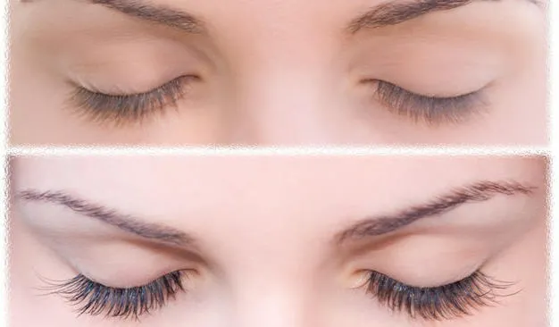
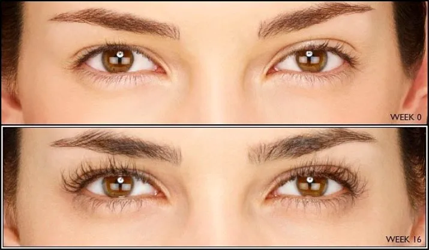

Bimatoprost: before and after
In most cases, eyelashes suffer from external negative factors, the most common of which are aggressive artificial components contained in low-quality cosmetics, extension and wearing of artificial eyelashes, prolonged exposure to ultraviolet radiation.
Disastrous for the eyelashes and eyebrows, and a radiation exposure. And although increased hair loss does not entail serious consequences and generally does not threaten health, this cosmetic defect is accompanied by serious discomfort, greatly affecting the psychological state and self-esteem of the woman.
Special stimulating cosmetics can not only eliminate the external manifestations of this problem, but also restore the hairs from the inside. Careprost drops are designed to strengthen the bulbs, restore the follicles and regrow the eyelashes. The solution has minimal contraindications and rarely causes side reactions.
It is necessary to prepare for the use of cosmetics. You can apply Bimatoprost only on the upper lashes along their roots. The applicator should be moistened with a substance over the bases of the hairs. Do not use cosmetics more than once a day. If the solution falls into any other areas, it must be removed with a cotton pad. If desired, you can also use Bimatoprost on the eyebrows.
Сareprost allows you to repeatedly improve the appearance of thin and rare eyelashes, damaged by the build-up or those from nature. Also, the product helps to cope with excessive loss of bulbs associated with mineral vitamin deficiency.
As confirmed by numerous reviews of doctors and the results of clinical studies, in the absence of individual contraindications, a non-toxic solution is absolutely safe for the body, but it is important to follow all the rules of application.
Сareprost works in all cases. From the moment of development to the present, сareprost eyelash growth stimulator remains a highly effective tool that helps improve the appearance and condition of eyelashes to absolutely everyone, regardless of the original data.